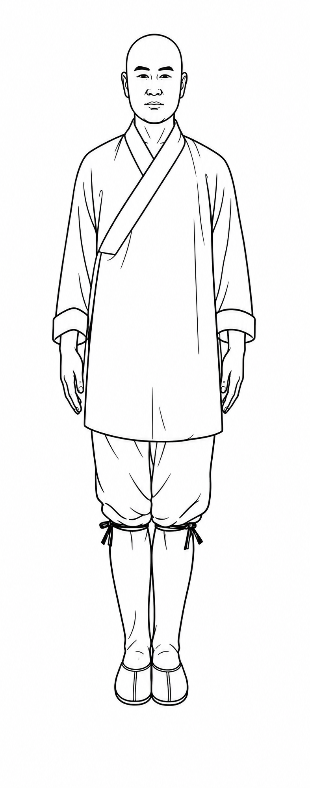
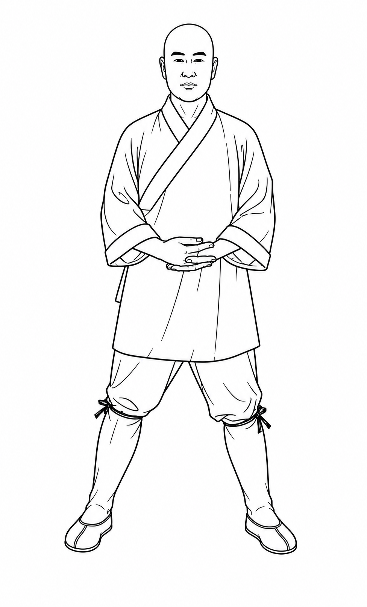
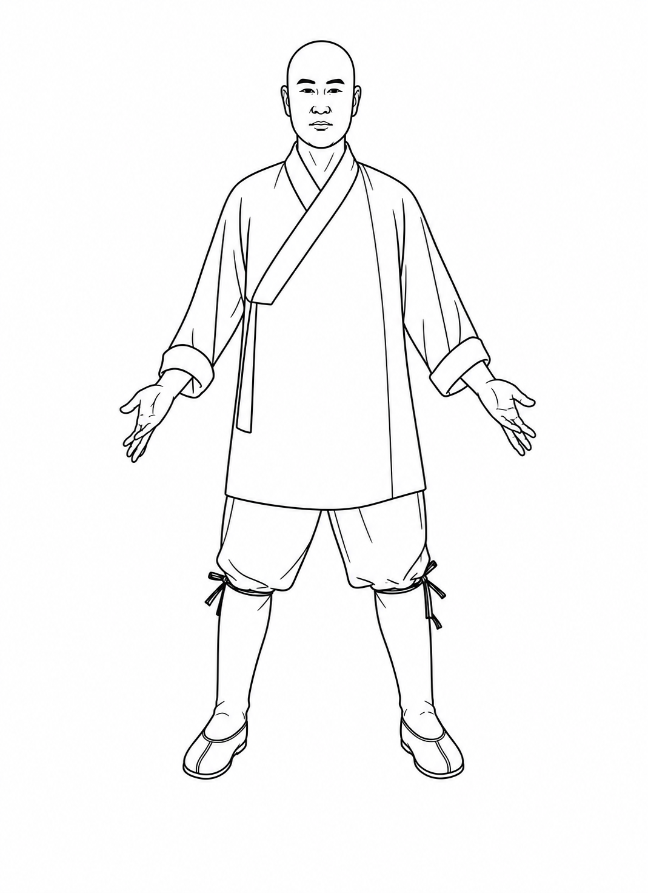
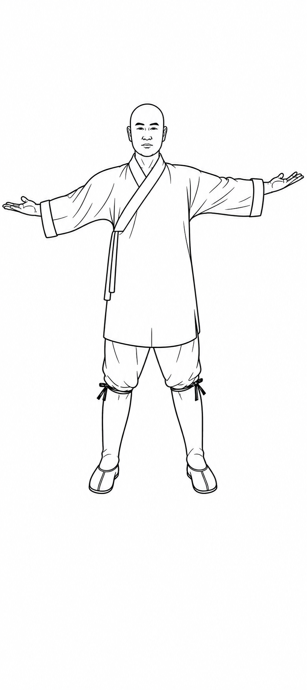
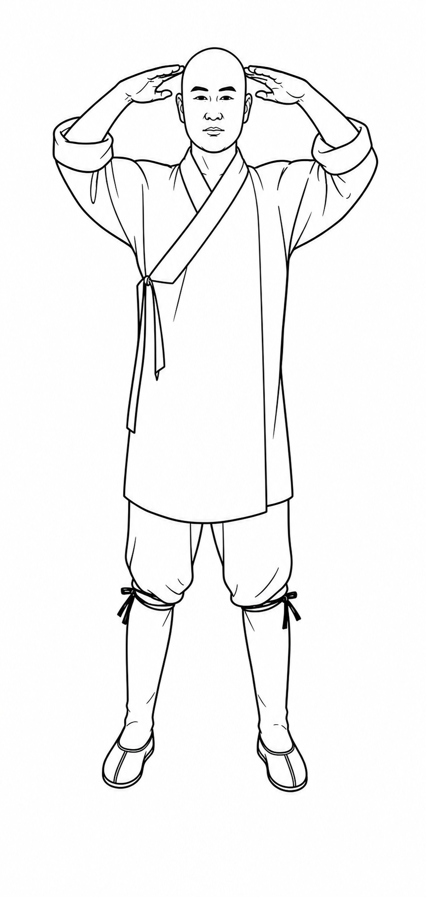
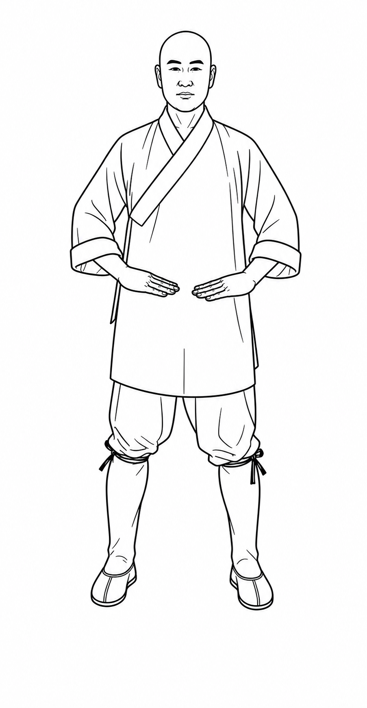

Standing-Method Tu‑Na PracticeRead by the breath · Page 1 · Steps 1–6
▲ inhale▼ exhale▸ order of motion▸ path the hands travel
Set the stance
Prepare
↻
breathe naturally
1

→
2

1–2 · Stand upright, feet together, open hands at the sides. Step the left foot out past shoulder‑width and gather both hands to the dantian (lower abdomen), right palm outside. Settle here and breathe naturally — this is the resting breath the whole set returns to.
First breath
In → Out
▲ ▼
deep in, then long out — through the nose
3

3 · On a deep inhale, raise both hands up to ear height, palms down. Then on a long exhale, sweep the arms open and down to the hips, palms facing out. One breath in, one long breath out — this sets the rhythm for everything that follows.
One inhalation
Inhale
▲
deep, until full — through the nose
4

→
5

4–5 · Lift both open hands out and up to shoulder height, palms up. Without breaking the inhale, bend the elbows and draw the hands in toward the forehead, fingertips facing — keep drawing breath in until the lungs are full.
One exhalation
Exhale
▼
long and slow — through the nose
6

6 · Press both open hands slowly down the front of the face, past the chest, all the way to the lower abdomen — letting the whole exhale empty out as the hands sink.